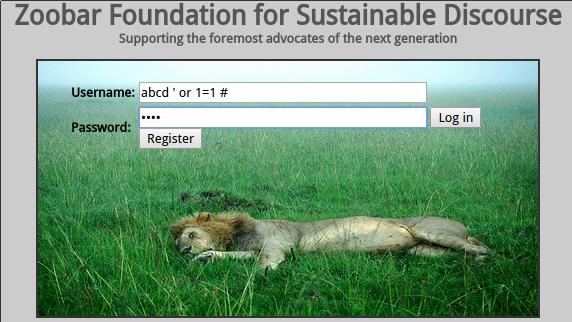

Apache2 ModSecurity
Web服务器安全
Overview
ModSecurity supplies an array of request filtering and other security features to the Apache HTTP Server, IIS and NGINX. ModSecurity is a web application layer firewall. ModSecurity is free software released under the Apache license 2.0.
服务器环境
接下来简单介绍如何配置Apache2的ModSecurity模块，以在服务器层进行必要的安全防护措施。首先是我们部署的安装环境：
OS：Ubuntu 14.04.1 LTS
Apache: Apache/2.4.7 (Ubuntu)
安装ModSecurity及其依赖
# apt-get install libxml2 libxml2-dev libxml2-utils libaprutil1 libaprutil1-dev libapache2-modsecurity
可以查看一下版本号，确认是 2.7版本：
# dpkg -s libapache2-modsecurity | grep Version
配置ModSecurity
# cd /etc/modsecurity/
# cp modsecurity.conf-recommended modsecurity.conf
# vim modsecurity.conf
在第七行修改为：
SecRuleEngine On
启用核心规则集
把需要使用的规则集放在以下目录中：
# cd /usr/share/modsecurity-crs/activated_rules/
启用base规则集：
# for f in $(ls ../base_rules/); do ln -s ../base_rules/$f; done
你也可以启用其它规则集，但是要注意对于不同的规则集可能需要启动特定的模块。
然后修改Apache2的模块配置，启用规则集：
# vim /etc/apache2/mods-available/security2.conf
修改为：
<IfModule security2_module>
# Default Debian dir for modsecurity's persistent data
SecDataDir /var/cache/modsecurity
# Include all the *.conf files in /etc/modsecurity.
# Keeping your local configuration in that directory
# will allow for an easy upgrade of THIS file and
# make your life easier
IncludeOptional /etc/modsecurity/*.conf
IncludeOptional /usr/share/modsecurity-crs/*.conf
IncludeOptional /usr/share/modsecurity-crs/activated_rules/*.conf
</IfModule>
启用ModSecurity模块
# a2enmod headers
# a2enmod security2
# service apache2 restart
配置效果
在登录页面输入 SQL 注入语句：
abcd ' or 1=1 #

点击登录可以发现，Apache服务器直接提示403 Forbiddden 错误：

查看日志可以知道具体的拦截情况：
# cat /var/log/apache2/modsec_audit.log
Message: Access denied with code 403 (phase 2). Pattern match "(?i:([\\s'\"`\xc2\xb4\xe2\x80\x99\xe2\x80\x98\\(\\)]*?)\\b([\\d\\w]++)([\\s'\"`\xc2\xb4\xe2\x80\x99\xe2\x80\x98\\(\\)]*?)(?:(?:=|<=>|r?like|sounds\\s+like|regexp)([\\s'\"`\xc2\xb4\xe2\x80\x99\xe2\x80\x98\\(\\)]*?)\\2\\b|(?:!=|<=|>=|<>|<|>|\\^|is\\s+not ..." at ARGS:login_username. [file "/usr/share/modsecurity-crs/activated_rules/modsecurity_crs_41_sql_injection_attacks.conf"] [line "77"] [id "950901"] [rev "2"] [msg "SQL Injection Attack: SQL Tautology Detected."] [data "Matched Data: 1=1 found within ARGS:login_username: abcd ' or 1=1 #"] [severity "CRITICAL"] [ver "OWASP_CRS/2.2.8"] [maturity "9"] [accuracy "8"] [tag "OWASP_CRS/WEB_ATTACK/SQL_INJECTION"] [tag "WASCTC/WASC-19"] [tag "OWASP_TOP_10/A1"] [tag "OWASP_AppSensor/CIE1"] [tag "PCI/6.5.2"]
Action: Intercepted (phase 2)
Apache-Handler: application/x-httpd-php
Stopwatch: 1432371734022213 3540 (- - -)
Stopwatch2: 1432371734022213 3540; combined=2202, p1=1194, p2=927, p3=0, p4=0, p5=80, sr=100, sw=1, l=0, gc=0
Response-Body-Transformed: Dechunked
Producer: ModSecurity for Apache/2.7.7 (http://www.modsecurity.org/); OWASP_CRS/2.2.8.
Server: Apache/2.4.7 (Ubuntu)
Engine-Mode: "ENABLED"